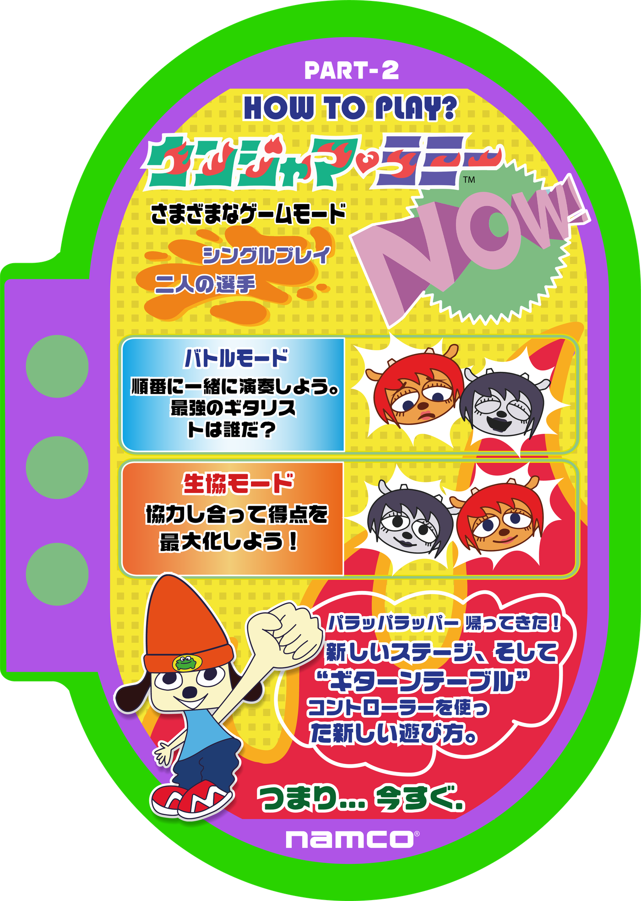
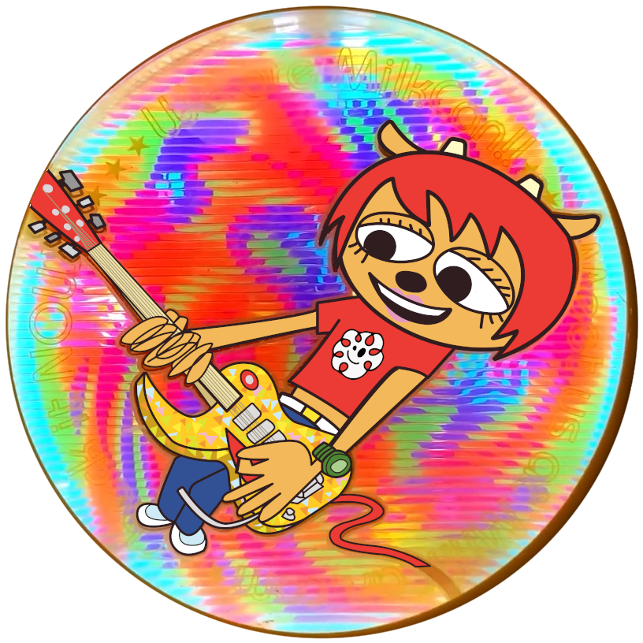
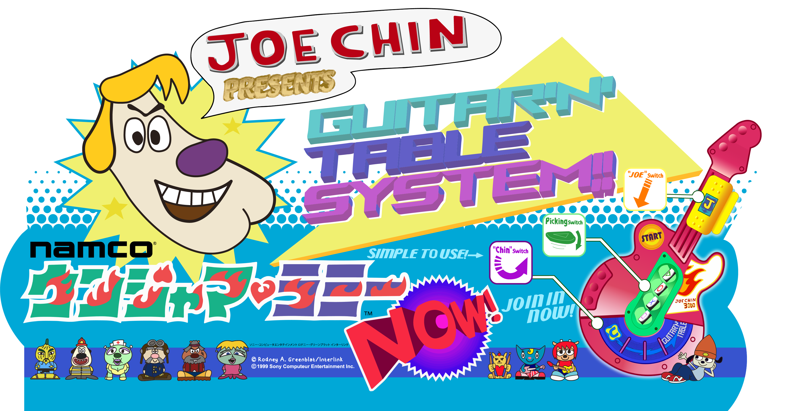
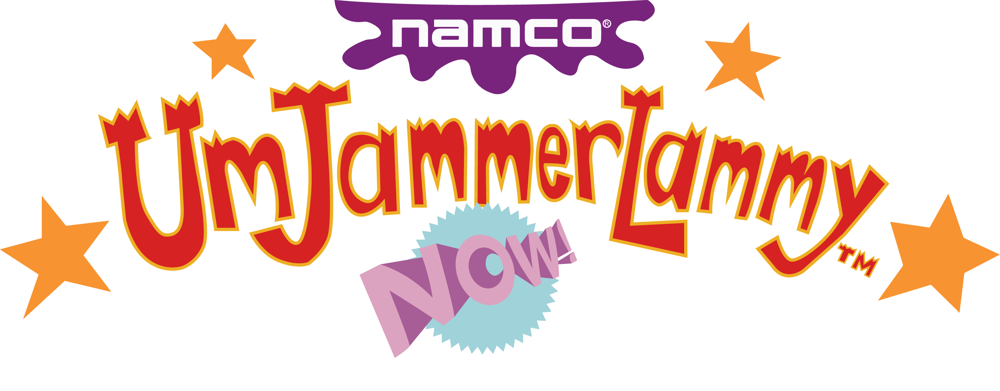
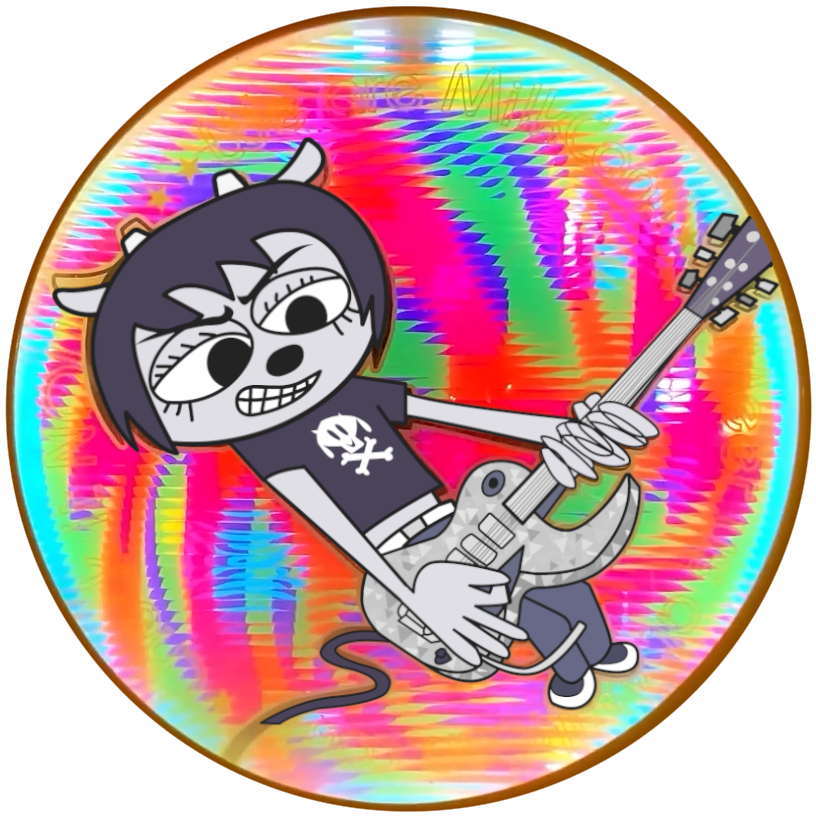
Um Jammer Lammy NOW! is an extremely rare arcade version of Um Jammer Lammy, co-developed by NanaOn-Sha and Namco. Released in Japanese arcades in December 1999, it ran on the Namco System 12 (based on PlayStation 1 hardware) and was one of Namco's four arcade guitar games published during the rhythm game craze of the late '90s. ウンジャマ・ラミー Now!は、七音社とナムコが共同開発した非常に希少なアーケード版ウンジャマ・ラミーです。1999年12月に日本のゲームセンターで稼働を開始し、Namco System 12基板（PlayStation 1ハードウェアがベース）で動作しました。1990年代後半のリズムゲームブーム期にナムコが発売した4作のアーケード・ギターゲームのうちの1作でもあります。
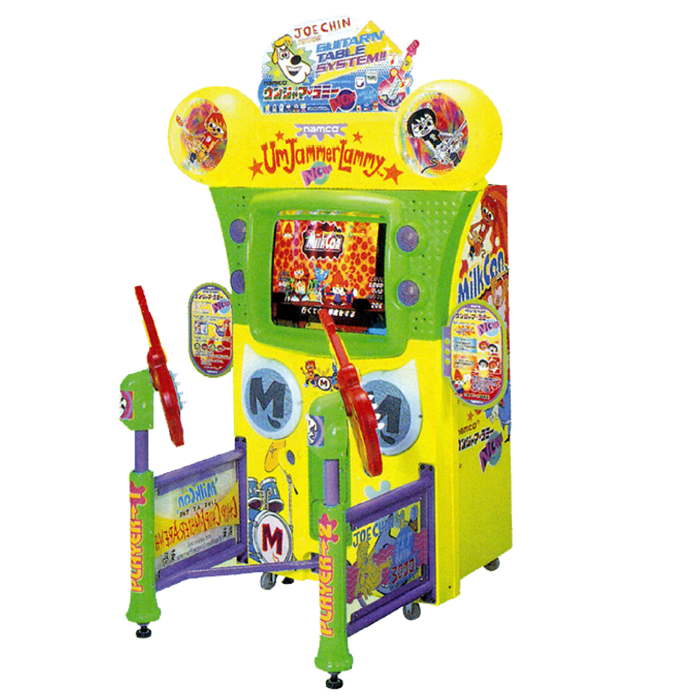
The cabinet features a unique "Guitar'n'Table" control system with two physical guitar controllers mounted on the machine. The buttons for Triangle, Circle, Cross and Square are represented by strummers in the middle of the guitar. The L button is a slider at the top called the "Joe Switch," and the R button is a scratch disc at the bottom called the "Chin Switch." 筐体には「ギターンテーブル」と呼ばれるユニークなコントロールシステムが搭載され、2本のギター型コントローラーが本体に取り付けられています。ギター中央部の「ストラマー」が△・〇・×・□の各ボタンに対応し、上部にあるスライダーはL1ボタンに相当する「ジョー・スイッチ」、下部にあるスクラッチディスクはR1ボタンに相当する「チン・スイッチ」となっています。

namco.co.jp/home/aa/am/vg/umjammerlammy/ was Namco's official Japanese product page for the arcade port Um Jammer Lammy NOW!, released to amusement centres in 2000 on Namco System 12 hardware. The site introduced the cabinet to operators and players with the tagline "あの『ウンジャマ・ラミー』がアミューズメントスポットに新登場!" ("That very same Um Jammer Lammy is finally arriving at amusement spots!"), the Lammy logo, a render of the dedicated cabinet, and an "ENTER" link into the rest of the promo. This Wayback Machine snapshot is from February 23, 2002. namco.co.jp/home/aa/am/vg/umjammerlammy/は、2000年にナムコ System 12 基板でアーケードへ移植されたアーケード版『ウンジャマ・ラミー NOW!』を紹介していたナムコ公式の日本向け製品ページです。トップでは「あの『ウンジャマ・ラミー』がアミューズメントスポットに新登場!」というキャッチコピーとともに、ラミーのロゴ、専用筐体のレンダリング、そしてプロモコンテンツ本編へ進む「ENTER」リンクが掲げられ、オペレーターおよびプレイヤーに向けてキャビネットを訴求していました。本リンク先のWayback Machineスナップショットは2002年2月23日付のものです。


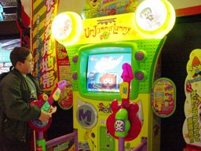
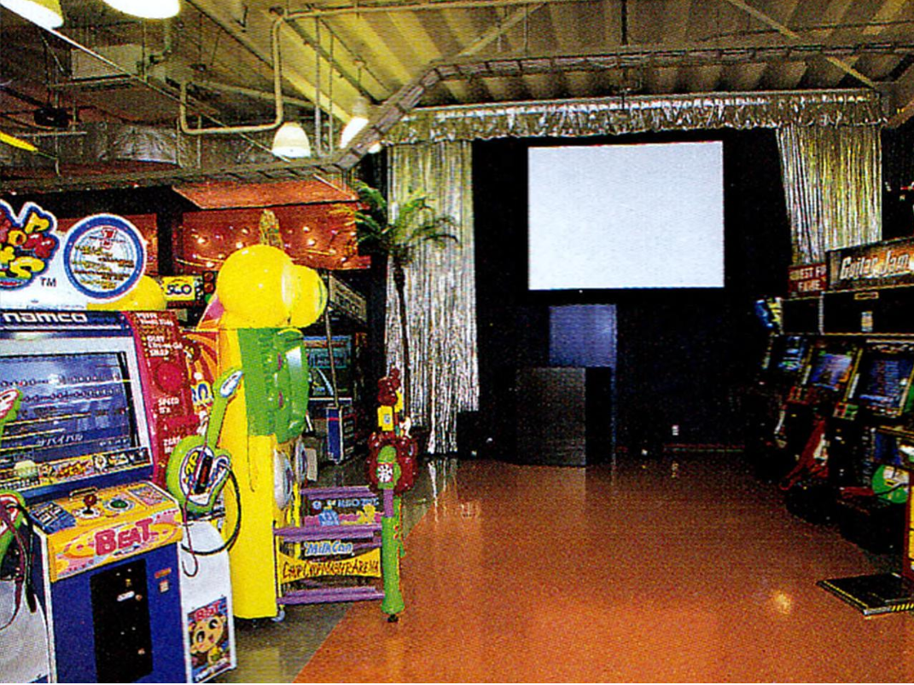


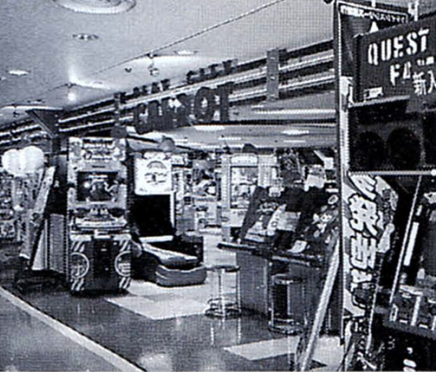
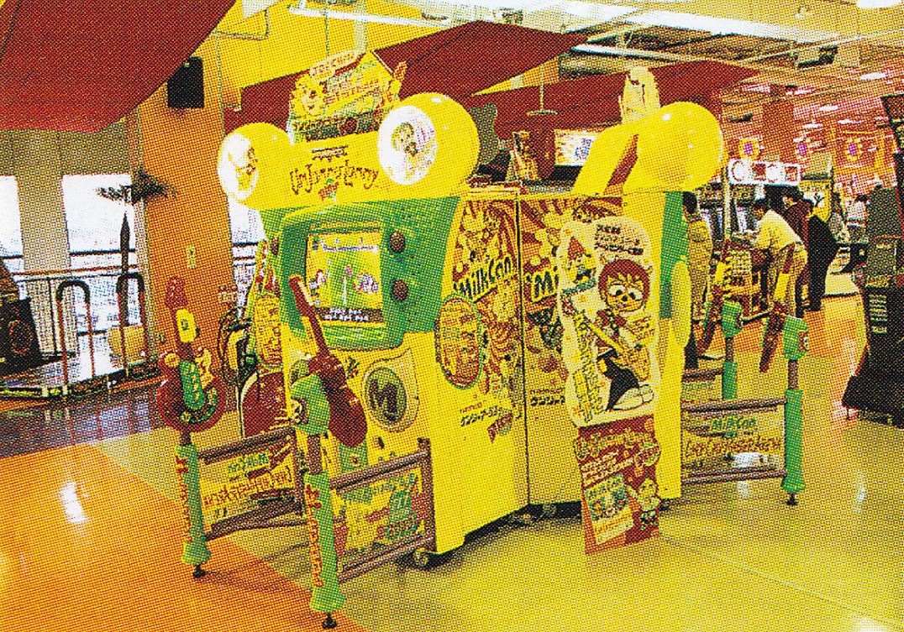

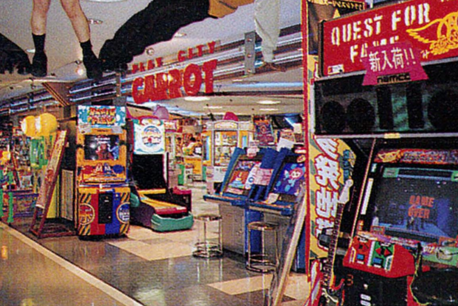


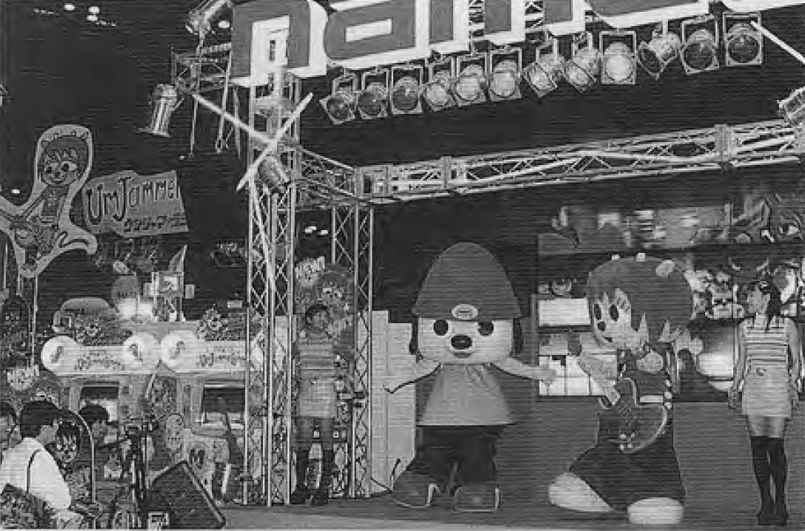
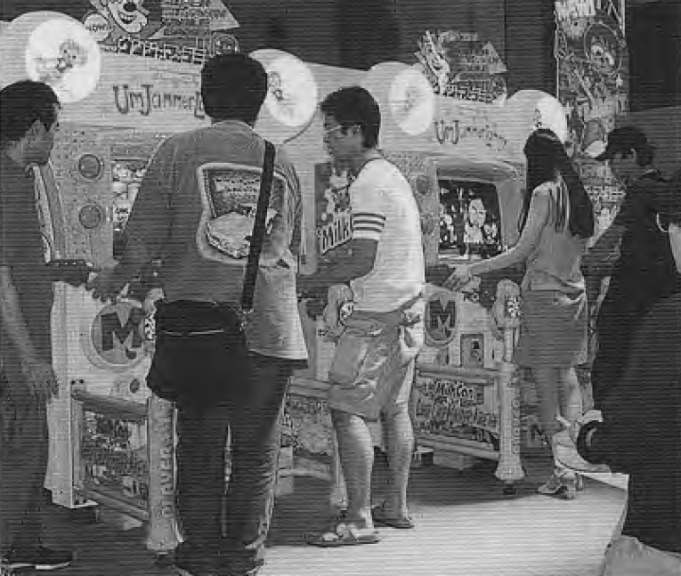
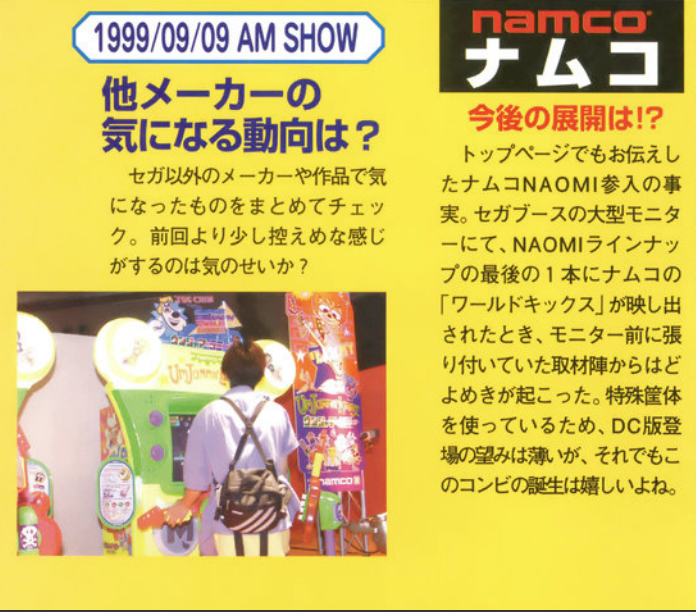
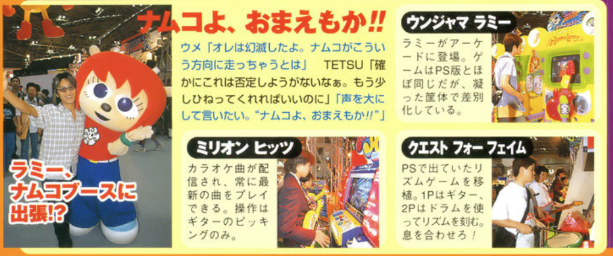
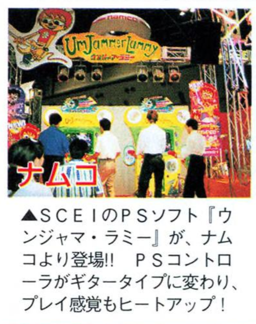
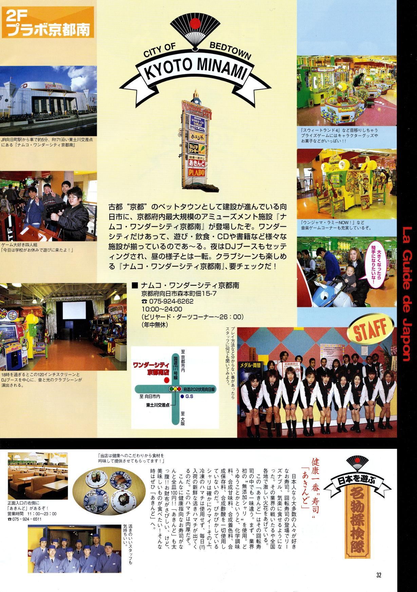

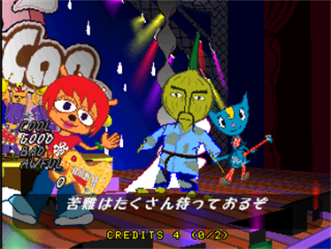


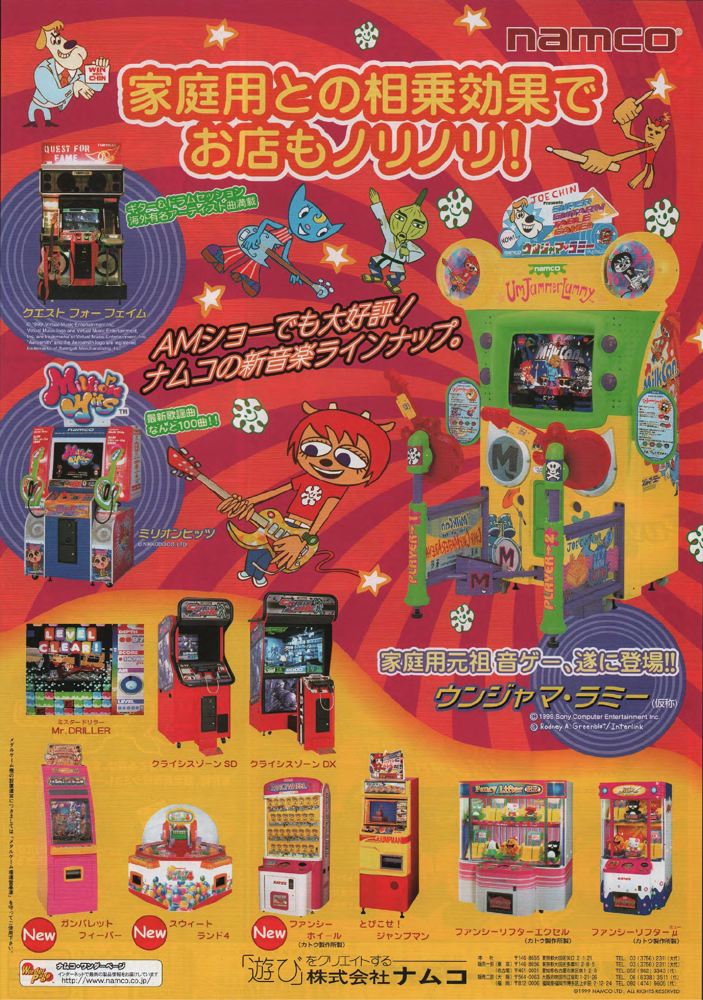
Despite being put into mass production, the only known working cabinet is owned by British celebrity Jonathan Ross. The game's ROM was not fully dumped until September 2023. Namco's arcade guitar games unfortunately did not sell well, making surviving units incredibly scarce. 量産されたにもかかわらず、現存する唯一の稼働筐体はイギリスの著名人ジョナサン・ロスが所有しています。ゲームのROMは2023年9月まで完全にダンプされませんでした。ナムコのアーケード・ギターゲーム作品群は商業的に振るわず、現存するユニットは極めて希少となっています。